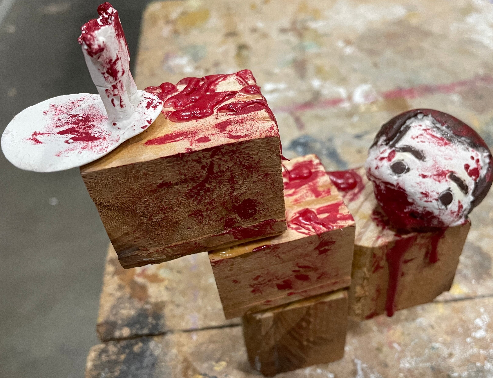

Melody Velez
I have taken a couple classes of art and art related subjects throughout middle school, high school, and college at University of California, Riverside. Throughout the years, I have continued to draw and practice other mediums. I have dabbled in digital art, worked on sculpturing, painting, while will try out other alternatives if the opportunity arises. In the seventh grade, I won a drawing contest called “Water is Life” in which I won first place. Although no other updates came from it, that was the moment I realized that maybe I can use these skills to my advantage. I do hope that I can find a way to incorporate my talents in the job field, but I also know how much art is looked down upon especially with the rise of artificial intelligence. I have tried to promote myself and my art online using apps such as Youtube and Instagram, but I haven’t done a great job at keeping up with the algorithm. I hope that I could find some time to finally post on a consistent basis, but that is something to worry about at a later point. There is the thought of changing majors, but I’ll stick with what I have for now.
I do have an understanding of how to use technology. Towards the end of middle school and high school, the events of COVID 19 affected not only everyone’s life, but the school system as well. With that, however, I was able to use the internet as well as a computer more to complete the necessary schoolwork. Yes, I have used Google Docs, Slides, and Spreadsheets, while also using Microsoft Word occasionally due to the assignment at hand. I have also had the opportunity to be able to use Adobe Illustrator and Adobe Photoshop as well. But outside of those, I have also used Ibispaint X to work on some artworks when I can. But I have also tried to make a continuous effort to draw when I can find the time. It’s hard to stay consistent, but I figured it out somehow. Whether it’s a small doodle or a scrapped piece of paper, I’ll try to improve. I also watch various videos of character designs and illustrations, most of them speaking about different tips and tricks to explain how you can convey a story to your audience. Will I ever be part of the creation process for something? Only time will tell.
As of now, I don’t know what I want to do with my life. After college, I know that I’ll have to focus more on the job aspect, which does scare me a bit. But I know I can get through it. I am determined and can communicate with others, I do have some experience with technology, and do my best to observe the situation in order to figure out what the next course of action should be. I does take a while, but I hope others could get the see my personality shine through.
Experience
Teacher Assistant
• Pass out slips, documents, other paperwork to students and teachers
• Organize student files in order
• Alert students to the front office for discussion or events
Student Cousil Member
• Sell popsicles at the end of Fridays to students
• Be part of school events
Theater Team Member
• Direct theater-goers to designated theater
• Answer questions if necessary
• Clean up theater after movie
• Make sure movie-goers have a good experience at the theater
Education
UC Riverside
Montclair High School
Portfolio
